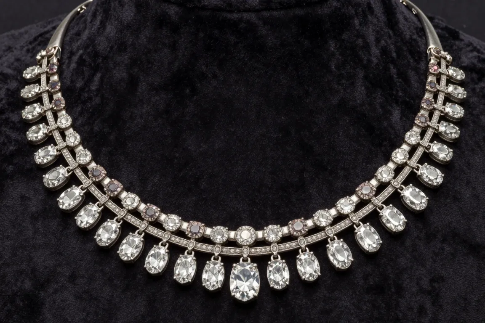

fashion · 1714–1837 · also: Georgian period jewels, Hanoverian paste and gem jewellery
Jewels of the Hanoverian reigns: foil-backed gems and paste in closed silver and gold settings, bright cut steel, pierced bows and flower sprays. They were made by hand to shine in candlelight.

Core thesis
In candlelight a jewel must return the flame. A sheet of foil under the stone and a closed setting make a small gem glow like a large one.
Design principles
Back each stone with a thin sheet of coloured foil inside a closed box setting, so that the stone returns candlelight.
Set the face of a stone in silver and make the back of the piece in gold. Silver keeps a white stone clear, and gold lies on the skin.
Cut diamonds and paste in the old mine cut or the rose cut, with a high crown and many small facets.
Make a rivière as one line of graduated stones, with the largest stone at the centre and a collet round each stone.
Pierce and chase the metal into bows, ribbons and sprays of flowers that follow the curves of the rococo.
Rivet small faceted steel studs to a plate for cut steel, a bright jewel that costs far less than a diamond one.
Hang each piece on a ribbon, a slide or a short chain so that it sits at the throat, the ear or the bodice.
Keep the back of each piece plain or engraved, because a closed setting has no open back.
Anti-patterns
Open-backed claw settings that show the point of the stone
Platinum or white gold, which no workshop used yet